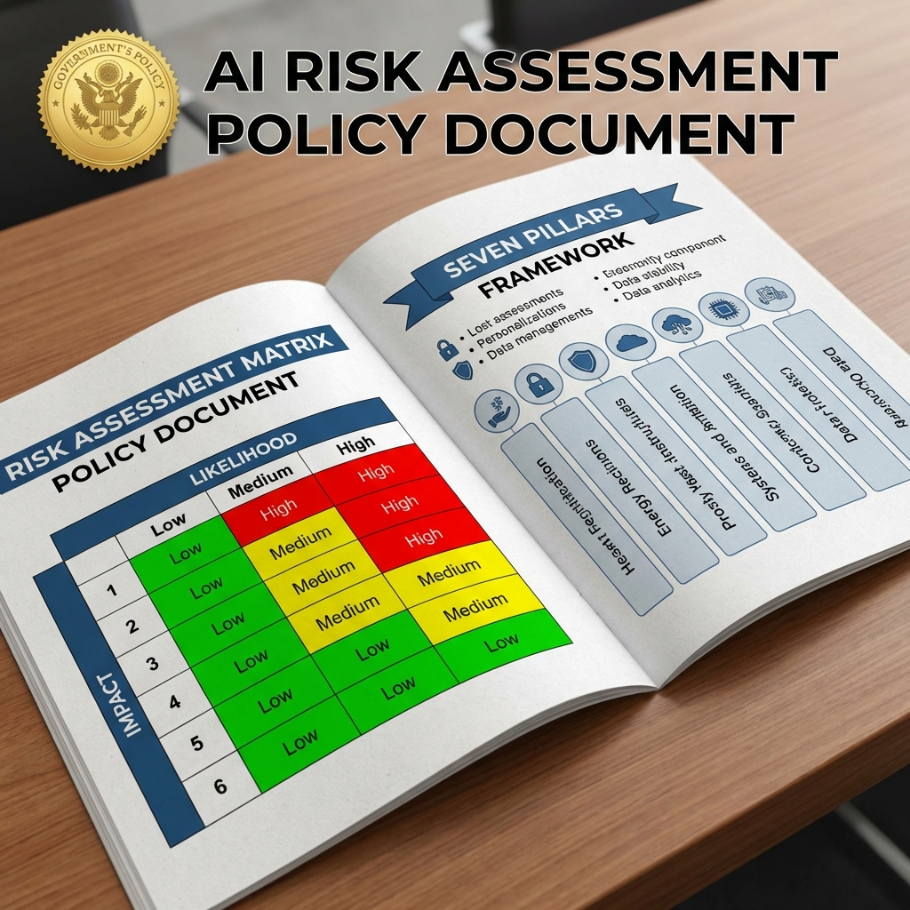

The wait is over. On March 20, the White House finally unveiled its National Policy Framework for Artificial Intelligence—a comprehensive legislative blueprint that attempts to chart a course for American AI leadership while addressing the technology's most pressing challenges. After years of executive orders, agency guidance, and congressional hearings, we now have something resembling a coherent national strategy.
The framework addresses seven key areas: innovation acceleration, child safety protections, workforce development, energy infrastructure, national security, international competitiveness, and what the administration calls "responsible deployment." It's ambitious in scope, carefully worded in specifics, and notably light on enforcement mechanisms—at least for now.
The Seven Pillars Explained
Let's break down what the White House actually proposed, because buried beneath the policy jargon are some genuinely significant policy shifts.
Innovation acceleration comes first, and it's the administration's attempt to thread the needle between promoting AI development and preventing harm. The framework calls for increased federal R&D funding, streamlined regulatory pathways for AI startups, and the creation of "AI innovation zones"—geographic areas with relaxed regulations to encourage experimentation. Think special economic zones, but for algorithms.
Child safety protections represent the most specific regulatory requirements in the entire document. The framework mandates age verification for AI systems that could expose minors to harmful content, requires parental consent for AI data collection from children under 13, and establishes a federal reporting system for AI-related harms to minors. This is where the administration chose to get concrete.
The Risk-Based Approach

Perhaps the most significant aspect of the framework is its regulatory philosophy: regulate risk, not algorithms. Rather than creating broad restrictions on AI development or deployment, the administration proposes a tiered system where high-risk applications face close scrutiny while low-risk uses proceed with minimal oversight.
What counts as "high-risk"? The framework lists several categories: AI systems used in criminal justice decisions, healthcare diagnostics, financial lending, educational assessment, and employment decisions. Essentially, anywhere an algorithm could significantly impact someone's life outcomes, the government wants a closer look.
This approach has drawn praise from industry groups who feared more prescriptive regulations, and criticism from advocates who wanted stricter guardrails. The reality is probably somewhere in between—better than no framework, but leaving substantial room for interpretation and potential abuse.
Energy Infrastructure: The Hidden bombshell
Buried in the framework's infrastructure section is a provision that's causing significant stir in tech circles: federal preemption of local permitting for AI data center energy projects. In plain English, the administration is proposing to override local zoning and environmental review for power infrastructure serving AI facilities.
This is a direct response to the energy bottleneck that's constraining AI development. Tech companies have been screaming about the inability to get power to their data centers fast enough, and the White House has apparently decided that national competitiveness concerns outweigh local control. Expect legal challenges, and expect them soon.
Workforce Implications
The workforce development section acknowledges what many have been saying for years: AI will disrupt employment, and government has a role in managing that transition. The framework proposes expanded funding for AI-related education and training, tax incentives for companies that reskill workers, and—most controversially—a "displacement insurance" program for workers whose jobs are eliminated by AI systems.
The displacement insurance concept is novel: essentially unemployment benefits specifically for AI-related job loss, potentially coupled with retraining requirements. It's unclear whether Congress will fund this, but its inclusion signals that the administration is taking workforce concerns seriously.
International Competitiveness
The framework doesn't mince words about the global AI race. It identifies China as the primary competitor and outlines measures to maintain American leadership: export controls on advanced AI chips, restrictions on Chinese investment in US AI companies, and expanded collaboration with allied nations on AI standards.
This is the framework's least surprising element—everyone knew the administration would prioritize competitiveness—but it's notable for its explicit framing of AI development as a national security imperative. The era of AI as purely commercial technology is officially over.
What's Missing
For all its scope, the framework leaves significant gaps. Intellectual property questions—who owns AI-generated content, what training data is fair use—are largely deferred to ongoing litigation and future legislation. Privacy protections are mentioned but not detailed. And the enforcement question—who actually makes sure companies follow these guidelines—remains murky.
The framework also avoids taking positions on several hot-button issues: open-source AI development, AI consciousness and rights, and the long-term existential risk questions that dominate certain corners of AI discourse. These omissions may be strategic—don't inflame controversies you can't resolve—but they leave important questions unanswered.
What Happens Next
The framework is just that—a framework. Actual implementation requires legislation, agency rulemaking, and probably years of litigation. Congress will debate, industry will lobby, advocacy groups will push back, and the courts will eventually decide what sticks.
But something has shifted. The era of AI as the Wild West is ending. The United States now has a stated policy on artificial intelligence, and that policy prioritizes American leadership while acknowledging genuine risks. Whether this framework achieves its goals—or becomes another artifact of bureaucratic aspiration—remains to be seen.
One thing is certain: AI policy just became a central issue in American governance. The implications will ripple through technology, business, and society for decades to come.